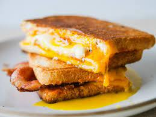

Cavatelli

Description
There is nothing in the world I love more than grilling a sandwich. Whether it be a grilled cheese or a panini, warm bread with a gooey center is a definite comfort food. Here you will find the recipe for a delicious, fried-egg sandwich.
Ingredients
- 1 tablespoon ketchup
- 1/2 teaspoon chipotle in adobo sauce
- 2 slices sourdough bread
- 2 slices Cheddar
- 1 tablespoon unsalted butter
- 1 slice bacon, halved
- 1 egg
Steps
- Combine the ketchup and chipotle and spread on the inside of each piece of bread.F
- Place the cheese between the bread at an angle so that the edges hangover the sides of the bread.
- Butter the outside of one bread slice with half the butter. Heat a skillet over medium heat.
- Press the sandwich on, buttered-side down. Press until the bread is golden brown and the cheese has started to melt.
- Butter the other side (which is facing up) with the remaining butter and flip. Cook until golden brown and the cheese is gooey, this should all take 3 to 4 minutes. Remove the sandwich from the heat and hold.
- Meanwhile, in a pan over medium heat, cook the bacon until barely crisp, about 5 minutes.
- Flip the bacon, pushing the two pieces next to each other to form a square.
- Crack the egg on top, cooking into the bacon. Continue cooking until the egg is set, about 5 minutes.
- Open up the sandwich (use a spoon to help pull apart the bread) and slide in the eggs and bacon.
- Close up, slice and enjoy.